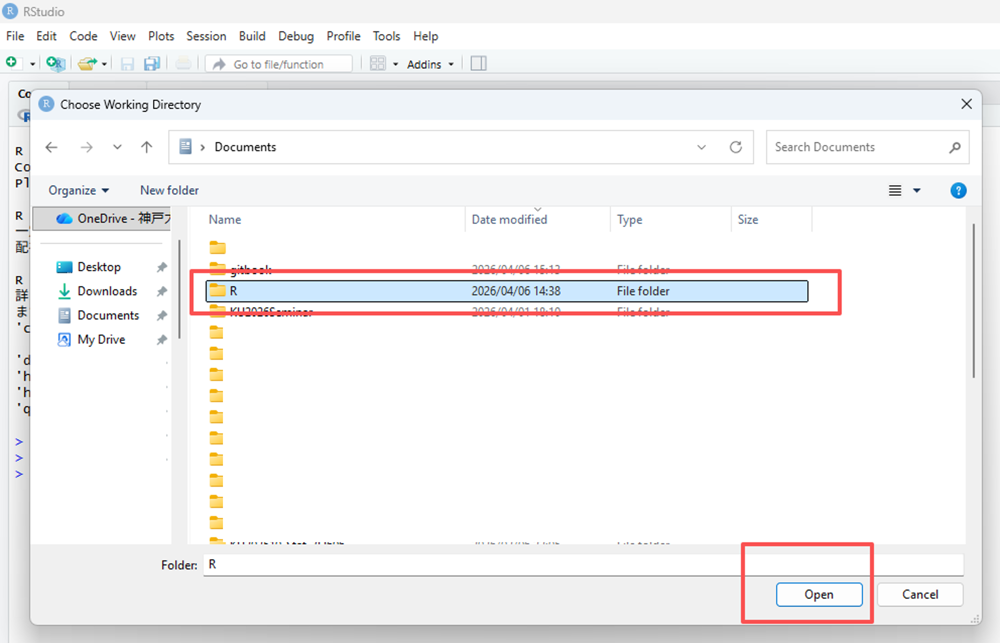

2 第２回（４月２０日）：RStudioでデータの操作と計算
2.1 準備
2.1.1 RStudio IDEの紹介
チートシートを確認してください

2.1.3 RStudioを起動し、作業ディレクトリ（パス、path）をRに設定しま。
方法は3通りあります。
方法１． setwd()関数を使う
Rフォルダに移動します。
パスを選択し、コピーします。

RStudioを開き、コード:
setwd("C:\\Users\\xxx\\Documents\\R")ありますいはsetwd("C:/Users/xxx/Documents/R")を入力します
注意：パスを " " で囲み、 \ を \\ または / に書き換えてください。

方法２． Session をクリックします。
RStudioの一番上へ移動し、「
Session」–>「Set Working Directory」–>「Choose Directory」をクリックします。
Rフォルダを選択し、「
Open」をクリックします。
方法３．右下のパネルから設定します。
- RStudioの右下のパネルへ移動します。「
Home」をクリックし、Rフォルダを選択します。

2.「Set Working Directory」をクリックします。


2.2 スクリプトの作成
File–>New File–>R Scriptをクリックします。Untitled1というファイルが作成されます。
ありますいは、
Fileの下のボタンをクリックし、R Scriptをクリックします。Untitled1というファイルが作成されます。


2.3 スクリプトの実行
計算を実行してみる。
## [1] 68## [1] 6## [1] 4## [1] 8## [1] 11スクリプトにコードを入力し、その行にカーソルを置いて実行（Run）をクリックすると、結果が出力されます。
もう１つの方法は、Ctrl-Enter（Macの場合はCommand-Enter）を同時に押す方法です。

複数行を実行したい場合、領域を指定して（Ctrl-A）、（Run）をクリックしますか、Ctrl-Enterで実行します。

2.4 データ型（Data Types）
- Numeric（数値型）: Integer（整数） と Double（実数）
- Character（文字型）:
"Hello", "Data Science", "2026" - Logical（論理型）:
TRUEまたはFALSE
2.5 主なデータ構造
2.5.1 ベクトル (Vector)
同じデータ型の値を一列に並べた、最も基本的な構造です。
特徴: すべての要素が同じ型（すべて数値、またはすべて文字など）であります必要があります。
値は、 c()関数 ( cは要素を結合しますためのc関数)を使用してベクトルに割り当てられます。丸括弧を開閉し、異なる要素をカンマで区切って配置します。
vector1 <- c(329, 45, 12, 28)
# 空のベクトルは次のように作成できます。
vecempty <- vector()
# 長さ5の空の数値ベクトル
vecnumempty <- vector(mode="numeric", length=5)
# 長さ8の空の数値ベクトル
veccharempty <- vector(mode="character", length=8)
# 連続する数字のシーケンスを作成します。
vecnum <- 10:16
# 以下の略
vecnum <- c(10, 11, 12, 13, 14, 15, 16)
# 注意：両端（10と16）を含む2.5.1.1 ベクトルには名前を付ける
# 数値ベクトルを作成する
vector1 <- c(329, 45, 12, 28)
# ベクトルには名前を付ける
names(vector1) <- c("apple", "orange", "バナナ", "レモン")
# 既に格納されているオブジェクトを使用する
mynames <- c("apple", "orange", "バナナ", "レモン")
names(vector1) <- mynames
# ベクトルの長さ（要素数）を取得する
length(vector1)## [1] 42.5.1.2 ベクトルから要素を抽出する
## apple
## 329## apple バナナ
## 329 12## orange バナナ レモン
## 45 12 28## apple
## 329## apple レモン
## 329 28
## apple orange レモン
## 329 31 28論理演算子
| 演算子 | 意味 |
|---|---|
< |
未満 |
<= |
以下 |
> |
より大きい |
>= |
以上 |
== |
等しい（ちょうど） |
!= |
等しくない |
! |
〜ではない（否定） |
x \| y |
x または y |
x & y |
x かつ y |
2.5.1.3 数値ベクトルの操作
## [1] FALSE TRUE FALSE FALSE FALSE## [1] FALSE FALSE TRUE TRUE TRUE## [1] FALSE TRUE TRUE TRUE TRUE## [1] 2 3 4 5## [1] 4## [1] 3 4 5 6 7## [1] 4 12 0## [1] 4 12 0要約統計量 関数一覧
| 関数 | 説明 | 備考 |
|---|---|---|
mean(x) |
平均値 (Mean) | 全要素の合計を要素数で割った値 |
median(x) |
中央値 (Median) | データを大きさ順に並べた時、中央にくる値 |
min(x) |
最小値 (Minimum) | ベクトル内の最も小さい値 |
max(x) |
最大値 (Maximum) | ベクトル内の最も大きい値 |
var(x) |
分散 (Variance) | データの散らばり具合を表す指標 |
summary(x) |
要約統計量 (Summary) | 最小、最大、平均、中央値、四分位数を一括表示 |
## Min. 1st Qu. Median Mean 3rd Qu. Max.
## 1.00 2.25 3.00 11.00 9.75 45.002.5.1.4 ベクトルの比較

## [1] FALSE FALSE TRUE TRUE TRUE## [1] 4 5 6## [1] 4 5 6## [1] FALSE# 文字ベクトルは、数値ベクトルと同様に操作されます。
k <- c("mRNA", "miRNA", "snoRNA", "RNA", "lincRNA")
p <- c("mRNA","lincRNA", "tRNA", "miRNA")
k %in% p## [1] TRUE TRUE FALSE FALSE TRUE## [1] "mRNA" "miRNA" "lincRNA"## [1] FALSE TRUE FALSE## [1] "intron"2.5.2 因子（Factor）
因子とは、他のベクトルの構成要素を離散的に分類（グループ化）するために使用されるベクトルオブジェクト（1次元）です。
因子は主に統計モデリングに用いられますが、グラフ作成にも役立ちます。
ファクター関数を使用すると、次のようなファクターを作成できます。
## Factor w/ 3 levels "high","low","medium": 1 2 3 2# 文字ベクトルと因子の例
# 要因ベクトル
e <- factor(c("high", "low", "medium", "low"))
# 文字ベクトル
e2 <- c("high", "low", "medium", "low")
# ベクトルの構造を確認する
str(e)## Factor w/ 3 levels "high","low","medium": 1 2 3 2## chr [1:4] "high" "low" "medium" "low"因子内のグループはレベルと呼ばれます。レベルは順序付けできます。 その後、数値ベクトルに適用されるいくつかの演算を使用できます。
# 順序付けないベクトル:
e <- factor(c("high", "low", "medium", "low"))
# max(e) # error
# 順序付けたベクトル:
e_ord <- factor(e, levels=c("low", "medium", "high"), ordered=TRUE)
max(e_ord) # "high"がでる## [1] high
## Levels: low < medium < high2.5.3 行列 (Matrix)
ベクトルに「行」と「列」の概念を加えた、2次元の構造です。
特徴: ベクトルと同様、すべての要素が同じデータ型であります必要があります。

2.5.4 データフレーム (Data Frame)
実務で最も多用される構造です。表形式のデータ（Excelのようなイメージ）を扱います。行列よりも汎用的です。
特徴: 列ごとに異なるデータ型を持つことができます（例：1列目は名前（文字）、2列目は年齢（数値））。同じ長さでなければなりません。
データフレームは列ごとに構成されます。列は変数であり、行は各変数の観測値です。
2.5.4.1 データフレームを作成する
data.frame 関数を使用する場合
d <- data.frame(name = c("Maria", "Juan", "Alba"),
age = c(23, 25, 31),
male = c(TRUE, TRUE, FALSE))
d## name age male
## 1 Maria 23 TRUE
## 2 Juan 25 TRUE
## 3 Alba 31 FALSE# stringsAsFactors: 文字をFactorとしてではなく、文字型として扱うことを保証します
d <- data.frame(name = c("Maria", "Juan", "Alba"),
age = c(23, 25, 31),
male = c(TRUE, TRUE, FALSE),
stringsAsFactors = FALSE)
d## name age male
## 1 Maria 23 TRUE
## 2 Juan 25 TRUE
## 3 Alba 31 FALSE## name age male sex
## 1 Maria 23 TRUE 男
## 2 Juan 25 TRUE 男
## 3 Alba 31 FALSE 女# 「stringsAsFactors = FALSE」が役立つ理由の例
df <- data.frame(label=rep("test",5), column2=1:5)
# 1つの値を置き換える
# df[2,1] <- "yes" # エラーが発生し、値が置き換えられません。
# Create a data frame with:
df2 <- data.frame(label=rep("test",5), column2=1:5, stringsAsFactors = FALSE)
# Replace one value
df2[2,1] <- "yes"
# Works!行列をデータフレームに変換する：
# create a matrix
b <- matrix(c(1, 0, 34, 44, 12, 4),
nrow=3,
ncol=2)
# convert as data frame
b_df <- as.data.frame(b)
# 行列操作と非常によく似ています。各要素は行と列のインデックスによって見つけられます。
b_df[1,2]## [1] 442.5.5 リスト (List)
異なる型や、異なる構造のオブジェクトをひとまとめにできる「詰め合わせセット」です。
特徴: 数値、文字、ベクトル、さらには別のリストまで、何でも入れることができます。
異なるデータ型を混在できる: 数値、文字、論理値、さらにはベクトルやデータフレーム、別のリストさえも一つのリストの中に格納できます。
要素ごとに長さが違っても良い: 「3つの数値」と「10個の文字列」を一つのリストに共存させることができます。
階層構造を持てる: リストの中にリストを入れる（入れ子構造）ができるため、複雑なデータ構造を表現するのに適しています。
2.5.6 配列 (Array)
行列をさらに多次元（3次元以上）に拡張したものです。
特徴: すべて同じデータ型であります必要があります。立方体のようなデータの重なりをイメージしてください。
多次元構造: 「縦 × 横」の平面だけでなく、「奥行き」を持たせたデータの塊（立方体のようなイメージ）を作ることができます。
単一のデータ型: ベクトルや行列と同様に、格納できるのはすべて同じデータ型（すべて数値、またはすべて文字など）である必要があります。
添字（インデックス）でアクセス: 3次元のアレイであれば、[行, 列, 次元] のように3つの数字を使ってデータを取り出します。
2.6 特別な値
NULL: 空の状態NA: 欠損値NaN: 非数Inf/-Inf: 無限 / -無限
2.6.1 NULL: 空のオブジェクト
NULL はオブジェクトであり、式や関数が未定義の値を返した場合に返されます。
R言語では、NULL（大文字）は予約語であり、データ型が不明なデータをインポートした結果として生成される場合もあります。
## [1] "NULL"## [1] 0## [1] TRUE## $a
## [1] 1
##
## $b
## [1] 2
##
## $c
## [1] 3## $a
## [1] 1
##
## $c
## [1] 32.6.2 NA：（利用不可）Rで認識される要素です。
## [1] FALSE FALSE FALSE TRUE## [1] 4 2 7
## attr(,"na.action")
## [1] 4
## attr(,"class")
## [1] "omit"## [1] 4 2 7## [1] NA## [1] 4.333333# 行列またはデータフレームでは、NA値を含まない行のみを残します。
mydata <- matrix(c(1:10, NA, 12:2, NA, 15:20, NA), ncol=3)
# NA を含まない行だけを残す
mydata[complete.cases(mydata), ]## [,1] [,2] [,3]
## [1,] 2 12 2
## [2,] 4 10 15
## [3,] 5 9 16
## [4,] 6 8 17
## [5,] 7 7 18
## [6,] 8 6 19
## [7,] 9 5 20## [,1] [,2] [,3]
## [1,] 2 12 2
## [2,] 4 10 15
## [3,] 5 9 16
## [4,] 6 8 17
## [5,] 7 7 18
## [6,] 8 6 19
## [7,] 9 5 20
## attr(,"na.action")
## [1] 1 3 10
## attr(,"class")
## [1] "omit"2.6.4 Inf: 限界を超えた数値
Inf は非常に大きな数値として扱われるため、計算を継続できるのが特徴です。
## [1] Inf## [1] Inf## [1] 0## [1] FALSE# これらが一つのベクトルに混ざった場合、Rは以下のように判定します。
x <- c(1, NA, NaN, Inf)
is.na(x) # FALSE TRUE TRUE FALSE (NaNはNAとしてもカウントされる)## [1] FALSE TRUE TRUE FALSE## [1] FALSE FALSE TRUE FALSE## [1] FALSE FALSE FALSE TRUE## [1] TRUE FALSE FALSE FALSEクイック比較表
| 値 | 意味 | データ型 (typeof) | 長さ (length) | 主な発生理由 | 判定関数 |
|---|---|---|---|---|---|
| NULL | 存在しない・空 | NULL | 0 | オブジェクトの未定義、リスト要素の削除 | is.null() |
| NA | 欠損値 (不明) | logical, integer等 | 1 | アンケートの未回答、データの読み込み漏れ | is.na() |
| NaN | 非数 (計算不能) | double (numeric) | 1 | 0/0, 負の数の平方根など | is.nan() |
| Inf | 無限大 | double (numeric) | 1 | 1/0, 指数関数のオーバーフロー | is.infinite() |
2.7 データの読み込み、保存
Rには、さまざまなファイル形式からデータをインポートするための関数やパッケージが用意されています。ここでは、Rにデータを読み込むための一般的な方法をいくつか紹介します。
データはMEATからダウンロードできます。
2.7.1 インポート
## ID Birthweight Age Age.group SBP
## 1 1 135 3 a 89
## 2 2 120 4 b 90
## 3 3 100 3 a 83
## 4 4 105 2 a 77
## 5 5 130 4 b 92
## 6 6 125 5 b 98
## 7 7 125 2 a 82
## 8 8 105 3 a 85
## 9 9 120 5 b 96
## 10 10 95 4 b 95# Excelファイル
# openxlsx というパッケージを依存する
if (!require("openxlsx")) install.packages("openxlsx") ## 初回のみインストールする
library(openxlsx)
# Excelファイルをインポート
data <- read.xlsx("data2.xlsx", sheet = 1)
## データの先頭部分を確認する
head(data) ## ID diagnosis radius_mean texture_mean perimeter_mean area_mean smoothness_mean compactness_mean concavity_mean concave.points_mean symmetry_mean fractal_dimension_mean
## 1 8810158 B 13.11 22.54 87.02 529.4 0.10020 0.14830 0.08705 0.05102 0.1850 0.07310
## 2 89296 B 11.46 18.16 73.59 403.1 0.08853 0.07694 0.03344 0.01502 0.1411 0.06243
## 3 873593 M 21.09 26.57 142.70 1311.0 0.11410 0.28320 0.24870 0.14960 0.2395 0.07398
## 4 87930 B 12.47 18.60 81.09 481.9 0.09965 0.10580 0.08005 0.03821 0.1925 0.06373
## 5 865432 B 14.50 10.89 94.28 640.7 0.11010 0.10990 0.08842 0.05778 0.1856 0.06402
## 6 892657 B 10.49 18.61 66.86 334.3 0.10680 0.06678 0.02297 0.01780 0.1482 0.066002.7.2 保存
# パスを正しく設定する
setwd("~/R")
# サンプルデータを作成する
data <- data.frame(participant_id = c(1, 2, 3, 4, 5, 6, 7, 8),
age = c(18, 19, 18, 22, 18, 19, 19, 18),
gender = c("male", "female", "male", "female", "female", "female", "male", "male"),
condition = c("high", "high", "low", "high", "low", "low", "low", "high"),
variable1 = c(9, 15, 9, 11, 4, 6, 4, 12))
# CSVファイルとして保存
write.csv(data, "data3.csv")
# xlsx ファイルとして保存
# Install and load the openxlsx package
if (!require("openxlsx")) install.packages("openxlsx") ## 初回のみインストールする
library(openxlsx) ##初回のみロードする
# Save data as Excel file
write.xlsx(data, "data4.xlsx", sheet = 1)成功すると、正しいディレクトリにファイルが表示されます。

さらに詳しく知りたい場合は、こちらを参照してください：https://bookdown.org/dereksonderegger/444/importing-data.html#google-sheets
2.8 要約統計量
2.8.1 集計表（Cross-tabulation / Summary Tables）の作成
# サンプルデータの作成
df <- data.frame(
ID = 1:100,
Gender = sample(c("Male", "Female"), 100, replace = TRUE),
Score = sample(50:100, 100, replace = TRUE),
Score2 = sample(20:100, 100, replace = TRUE),
Passed = sample(c("Yes", "No"), 100, replace = TRUE)
)
df## ID Gender Score Score2 Passed
## 1 1 Male 97 83 No
## 2 2 Male 51 31 No
## 3 3 Male 89 82 Yes
## 4 4 Female 55 99 Yes
## 5 5 Female 59 94 No
## 6 6 Female 62 28 No
## 7 7 Male 65 33 No
## 8 8 Male 91 39 No
## 9 9 Female 81 73 Yes
## 10 10 Female 80 85 No
## 11 11 Male 68 34 Yes
## 12 12 Male 90 31 Yes
## 13 13 Male 61 56 No
## 14 14 Male 50 43 No
## 15 15 Male 82 80 No
## 16 16 Female 58 22 Yes
## 17 17 Female 76 98 No
## 18 18 Female 84 76 No
## 19 19 Female 84 73 No
## 20 20 Female 81 93 Yes
## 21 21 Male 58 20 Yes
## 22 22 Female 55 97 Yes
## 23 23 Male 74 24 Yes
## 24 24 Male 92 40 No
## 25 25 Male 64 83 No
## 26 26 Male 76 85 No
## 27 27 Female 60 91 Yes
## 28 28 Female 50 56 No
## 29 29 Male 92 60 No
## 30 30 Female 54 68 No
## 31 31 Female 77 100 No
## 32 32 Male 77 46 No
## 33 33 Female 61 95 Yes
## 34 34 Male 57 31 No
## 35 35 Female 70 29 No
## 36 36 Female 95 42 No
## 37 37 Female 72 77 No
## 38 38 Male 94 44 No
## 39 39 Male 59 79 No
## 40 40 Female 74 69 No
## 41 41 Female 57 32 Yes
## 42 42 Male 58 21 Yes
## 43 43 Male 51 26 No
## 44 44 Female 82 82 No
## 45 45 Female 95 62 No
## 46 46 Male 87 90 Yes
## 47 47 Male 58 26 No
## 48 48 Male 94 21 Yes
## 49 49 Female 88 48 No
## 50 50 Female 80 56 No
## 51 51 Male 79 42 No
## 52 52 Male 82 24 Yes
## 53 53 Female 97 95 No
## 54 54 Male 64 97 Yes
## 55 55 Female 78 58 No
## 56 56 Female 70 22 No
## 57 57 Female 79 90 No
## 58 58 Female 70 52 No
## 59 59 Female 62 66 No
## 60 60 Female 66 88 Yes
## 61 61 Female 68 89 Yes
## 62 62 Male 83 96 Yes
## 63 63 Female 66 69 Yes
## 64 64 Male 77 57 Yes
## 65 65 Male 61 35 No
## 66 66 Female 71 95 Yes
## 67 67 Female 69 86 No
## 68 68 Female 78 97 No
## 69 69 Male 80 87 No
## 70 70 Male 75 66 No
## 71 71 Male 88 86 Yes
## 72 72 Female 66 30 Yes
## 73 73 Male 89 68 Yes
## 74 74 Male 70 61 No
## 75 75 Male 55 52 Yes
## 76 76 Male 56 55 No
## 77 77 Male 71 29 No
## 78 78 Female 56 48 No
## 79 79 Male 50 27 No
## 80 80 Female 71 70 No
## 81 81 Male 53 33 No
## 82 82 Male 80 61 Yes
## 83 83 Male 80 36 Yes
## 84 84 Male 66 92 Yes
## 85 85 Female 98 100 Yes
## 86 86 Female 53 74 No
## 87 87 Female 70 80 No
## 88 88 Male 65 34 Yes
## 89 89 Male 92 39 Yes
## 90 90 Male 81 92 No
## 91 91 Female 94 29 Yes
## 92 92 Male 98 56 Yes
## 93 93 Female 51 62 Yes
## 94 94 Female 98 85 Yes
## 95 95 Male 97 88 Yes
## 96 96 Male 62 25 Yes
## 97 97 Male 60 65 No
## 98 98 Male 93 39 Yes
## 99 99 Female 65 61 No
## 100 100 Female 68 98 Noクロス集計：2つの変数を掛け合わせる場合
##
## No Yes
## Female 31 17
## Male 28 24##
## No Yes
## Female 0.6458333 0.3541667
## Male 0.5384615 0.46153852.8.3 Rによる
要約統計量は、データセットの主な特徴を簡潔にまとめたものです。これには、中心傾向、ばらつき、形状などの指標が含まれます。
このsummary()関数は、データセット内の各変数に関する重要な統計情報を簡潔に概観します。最小値、第1四分位数、中央値、平均値、第3四分位数、最大値が含まれます。
# Create a data set
data <- data.frame(participant_id = c(1, 2, 3, 4, 5, 6, 7, 8),
age = c(18, 19, 18, 22, 18, 19, 19, 18),
gender = c("male", "female", "male", "female", "female", "female", "male", "male"),
condition = c("high", "high", "low", "high", "low", "low", "low", "high"),
variable1 = c(9, 15, 9, 11, 4, 6, 4, 12))
# データセットの要約統計量を計算する
summary(data)## participant_id age gender condition variable1
## Min. :1.00 Min. :18.00 Length:8 Length:8 Min. : 4.00
## 1st Qu.:2.75 1st Qu.:18.00 Class :character Class :character 1st Qu.: 5.50
## Median :4.50 Median :18.50 Mode :character Mode :character Median : 9.00
## Mean :4.50 Mean :18.88 Mean : 8.75
## 3rd Qu.:6.25 3rd Qu.:19.00 3rd Qu.:11.25
## Max. :8.00 Max. :22.00 Max. :15.00## Min. 1st Qu. Median Mean 3rd Qu. Max.
## 4.00 5.50 9.00 8.75 11.25 15.00